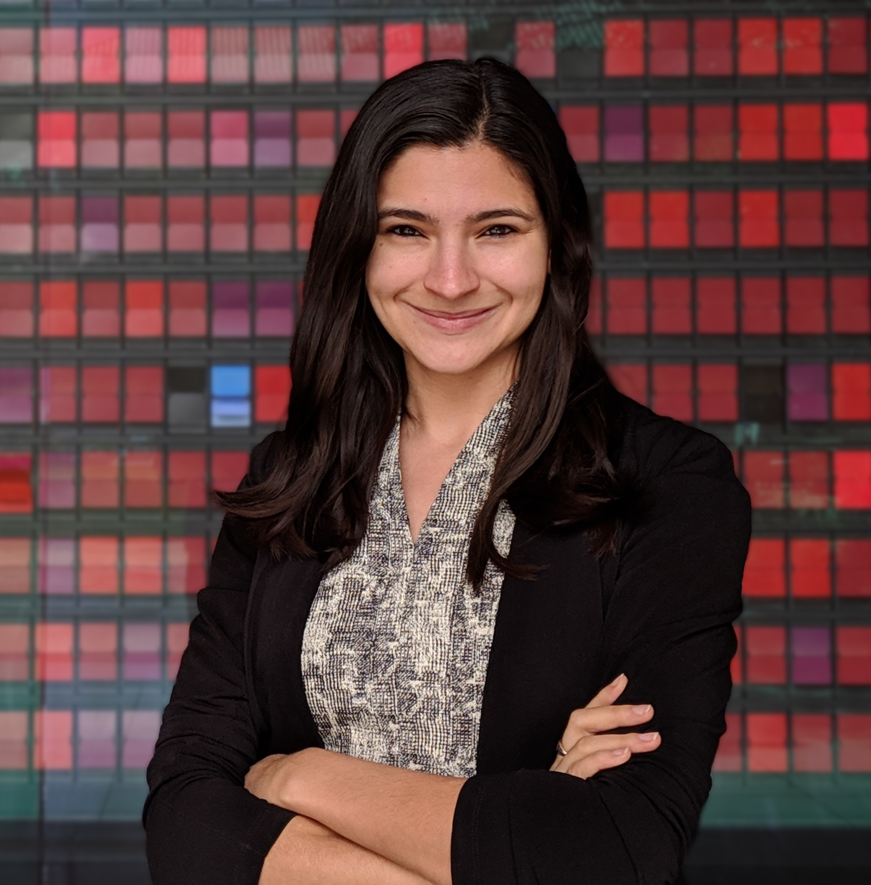

I am a PhD candidate in Behavioral Marketing at Stanford Graduate School of Business.
Broadly, I am interested in how consumer research can be leveraged to benefit society. In my first research stream, I examine how people can be shifted away from entrenched views, and factors that affect receptiveness to the opposition. In my second research stream, I explore the role of meaning in consumer satisfaction and decision-making. I am being co-advised by Zakary Tormala and Jennifer Aaker.
I am originally from Brooklyn, New York. Before attending Stanford, I taught English and debate classes in Seoul, South Korea. I received my B.S. in Psychology from Yale University.
I can be reached at rhiac@stanford.edu
Rhia Catapano, 2019